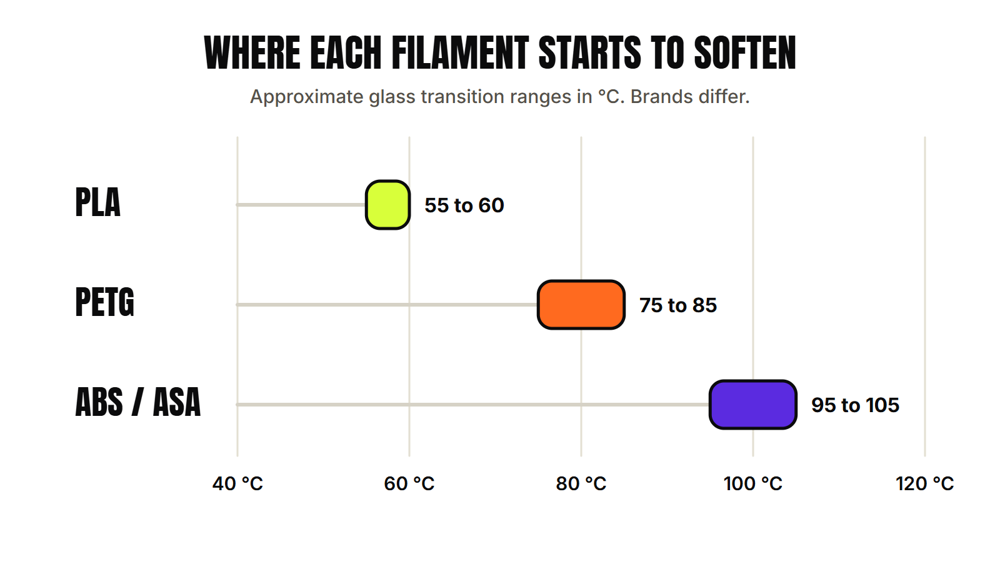
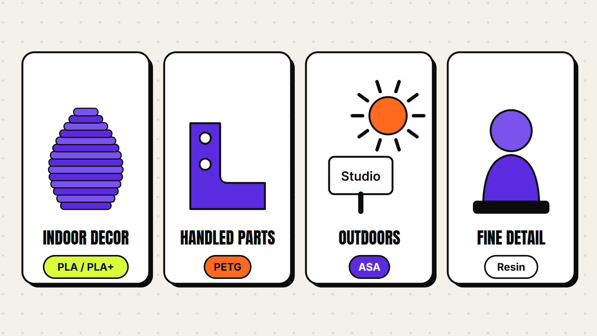

The material decides how a printed part copes with heat, sunlight, knocks, and daily handling. The shape can be perfect and the part can still fail if the plastic is wrong for the job. PLA is forgiving to print and suits decor. PETG is tougher for everyday parts. ABS and ASA handle heat, and ASA is the usual choice outdoors. Resin is a separate process for fine detail. This guide explains how to choose between them.
Answer these four questions first. They narrow the choice quickly.
PLA is the most widely used filament for desktop printing. It is made largely from plant-based sources, holds crisp detail, comes in many colours, and warps very little. PLA+ is a trade name for blends with additives, usually to make it a bit tougher. What the plus means varies between brands.
Good for: vases and decor, desk organisers, display stands, figurines, prototypes, and gifts used indoors.
Watch out for: heat. PLA starts to soften at roughly 55 to 60 °C. A closed car in summer or a sunny windowsill can get hot enough to bend it. It can also be brittle under sharp impact. Although it comes from plants, ordinary PLA does not break down quickly in a home bin or garden.
PETG belongs to the same family as the plastic used in many drink bottles, with a modification that makes it printable. It is tougher than PLA, gives a little before it breaks, copes better with moisture, and stands more warmth, softening at roughly 75 to 85 °C.
Good for: brackets, clips, holders that are handled often, racks, storage, and parts in warmer rooms or damp areas.
Watch out for: surfaces are a little glossier and fine details can look softer. PETG strings more while printing and soaks up moisture from the air, so it needs dry storage. It scratches more easily than some materials. A bottle-like family name does not make a printed part safe for food.
ABS is a tough engineering plastic used in many everyday products. ASA is a close relative designed to resist sunlight much better. Both soften at around 95 to 105 °C, well above PLA and PETG.
Good for: parts near warm equipment, items that take knocks, vehicle accessories away from direct heat sources, and, in the case of ASA, outdoor fittings and signs.
Watch out for: both are harder to print. They shrink as they cool, so large flat parts can warp, and they give off fumes that call for ventilation and filtering. ABS left in strong sun can yellow and turn brittle over time, which is why ASA is preferred outside.

Resin printers harden liquid photopolymer with light. They produce very fine detail and smooth surfaces, which suits miniatures, busts, jewellery patterns, and small precise parts.
Watch out for: standard resins are more brittle than filament plastics, and long exposure to sun or heat can discolour or weaken some of them. Tough and flexible resins exist, with their own properties. Uncured resin irritates skin and needs gloves and careful handling during production. A finished part should be properly washed and cured before you receive it.
| Property | PLA / PLA+ | PETG | ABS / ASA | Resin |
|---|---|---|---|---|
| Detail | Good | Fair to good | Fair to good | Excellent |
| Toughness | Moderate | Good | Good | Usually brittle |
| Heat resistance | Low | Medium | High | Varies by resin |
| Outdoor use | Poor | Fair | ASA good, ABS fair | Poor to fair |
| Typical use | Decor and display | Everyday working parts | Heat, impact, outdoors | Miniatures and fine work |

A well-designed PLA part can outperform a badly designed ABS part. Thicker walls, rounded inner corners, and printing in the right direction matter as much as the name on the spool. Layers are the weakest direction, so tell the printer where the load comes from. See designing for print for the details.
Tip: The figures here are general guidance. For any part where failure could hurt someone, ask for the maker's data sheet and test the real part before relying on it.
Pick "Not sure" in the quote form and describe where the part will be used. We will suggest a material and explain why. Our material pages give a short summary of each one, and care and kitchen safety covers what to avoid after the part arrives.